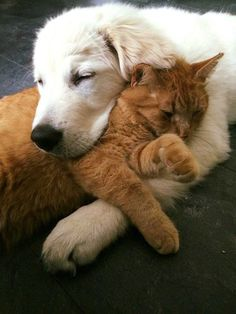

|
A Home For Your Pet
The perfect partner is waiting for you
|


|
AboutPage

About us:
A Home For Your Pet is a non-profit organisation.
We are a welfare organisation based in the Northern Cape, Kimberley. With so many deserving animals that we rescue.
This is a shelter for absued and abandoned animals. We sterilize and treat animals.
We do what we can do to help the animals living in poor environments.
Our Misson:
To advocate the safety and well-being of animals.
To find good and loving homes for all our adorable furry friends!
Open your hearts and homes for any one of our adordable friends
Our Vision:
Our vision is for all animals to live a life free of cruelty and suffering.
Our contact details:
A home for your Pet.
Contact details: 053 897 5410
Visit us at:
965 Waterloo Rd, West End
Kimberley
8301
South Africa
|
|